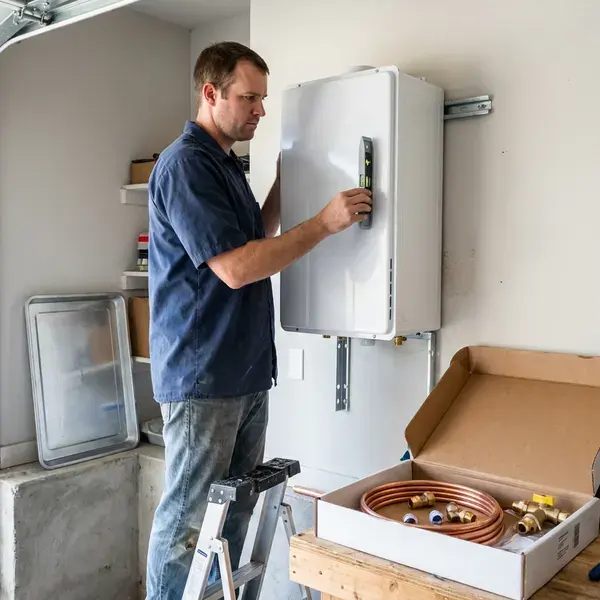
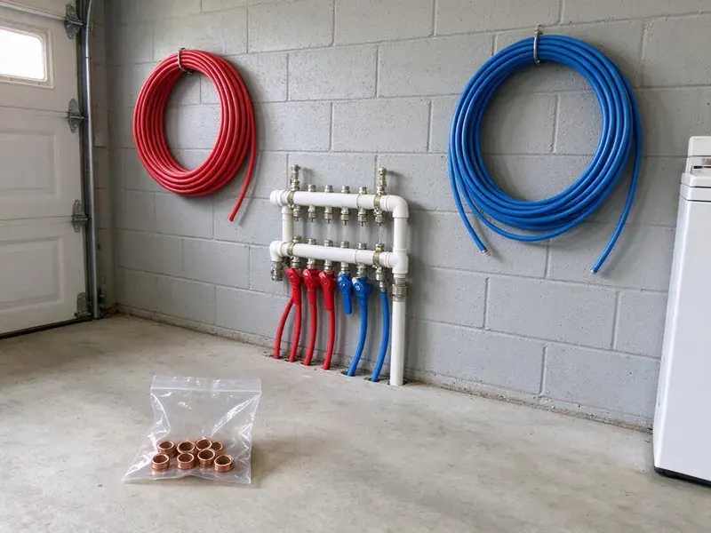

Electric Tankless Water Heater Installation in Huntington Beach, CA
Considering an electric tankless water heater for your Huntington Beach, CA property? FKM Plumbing provides professional installation services matched to your needs.
- Panel Capacity Review Included
- Prompt, Efficient Installation
- Energy Efficient
- Fast, Reliable Installation

Your Go-To for Electric Tankless Water Heaters in Huntington Beach, CA.
Contact FKM Plumbing now to schedule your electric tankless water heater installation and enjoy endless hot water.
Expert Electric Tankless Water Heater Installation in Huntington Beach, CA
FKM Plumbing focuses on professional electric tankless water heater installation, offering Huntington Beach homeowners a modern, energy-efficient solution for hot water. These units provide on-demand hot water, removing the need for a large storage tank and reducing energy waste.
Our expertise includes:
- Whole-home electric tankless units from Stiebel Eltron and Rheem
- Code Compliant Venting (if applicable)
- Accurate Electrical Load Assessment

Additional Plumbing Installation Services in Huntington Beach, CA
We install water heaters, pumps, lines, and fixtures across Huntington Beach, CA with careful, permitted work that passes inspection the first time.


Customers
Why Choose FKM Plumbing for Electric Tankless Water Heater Installation in Huntington Beach, CA?
Our team makes sure every installation meets strict standards for performance and safety, providing you with a dependable hot water system for years to come.
- Accurate Sizing, We size units by flow rate, temperature rise and household demand.
- Space Saving, These compact units mount on a wall, freeing up useful floor space in your garage or utility closet.
- Endless Hot Water, Never run out of hot water again, even with multiple showers or appliances running at the same time.
Citywide Coverage
FKM Plumbing proudly serves every neighborhood in Huntington Beach for electric tankless water heater installation. Whether you're in the heart of the city or a surrounding community, our team is ready to provide prompt and professional service. We understand the plumbing needs of homes across Southern California.
Experienced Team
Our team works with Stiebel Eltron, Rheem, EcoSmart and Bosch electric tankless models. They know each brand's installation and wiring requirements.
Safety-First Approach
We install pressure relief where required and follow local plumbing code. Every installation is tested for proper temperature and flow before we leave.
Trusted Certified Huntington Beach Plumbing Services Professionals
At FKM Plumbing, we take pride in providing certified plumbing services throughout Huntington Beach, CA. Backed by recognized industry credentials, our experienced plumbers combine technical skill with genuine customer care. Whether it is repair, installation, or maintenance, we follow strict safety and quality standards to deliver long-lasting results you can trust.
Call Us Now PHCC Plumbing Contractor Recognition
PHCC Plumbing Contractor Recognition Better Business Bureau (BBB) Accreditation
Better Business Bureau (BBB) Accreditation Angi Certified Pro
Angi Certified Pro ISO 9001 Quality Management Certification
ISO 9001 Quality Management CertificationEnergy-Smart Electric Tankless Water Heater Installation in Huntington Beach, CA
Emergency Electric Tankless Water Heater Replacement in Huntington Beach, CA
If your old water heater suddenly fails and you need a fast replacement, FKM Plumbing offers emergency electric tankless water heater installation services in Huntington Beach, CA. We understand the urgency of restoring hot water to your home or business. Our team can quickly assess your needs, recommend a good electric tankless unit and perform the installation with little disruption. We prioritize rapid response to get your hot water flowing again.

Commercial Electric Tankless Water Heater Installation in Huntington Beach
Businesses in Huntington Beach can also benefit from the efficiency and space-saving advantages of electric tankless water heaters. We install commercial-grade units for various applications, from restaurants to offices, providing hot water on demand without the need for large storage tanks. Our commercial installations are designed to meet the higher demands of business operations, providing reliable hot water for your employees and customers while following all commercial building codes and safety regulations.
Whole-Home Electric Tankless Installation in Huntington Beach
Whole-home electric tankless units can supply multiple fixtures at once when properly sized. Models like the Stiebel Eltron Tempra and Rheem RTEX often require multiple dedicated 240 volt circuits. We size the unit based on your peak flow and temperature rise. A warm, dry climate is the main factor for plumbing in Southern California, with long irrigation seasons and steady demand on outdoor lines. We install isolation valves for easy descaling.
Converting from Tank to Electric Tankless in Huntington Beach, CA
Switching from a tank water heater to electric tankless can free up space and reduce standby energy loss. We remove the old tank and install the new wall-mounted unit. Water lines are rerouted and new isolation valves are installed. We also confirm electrical capacity and coordinate new circuits. The result is a cleaner, more compact setup.
Residential Electric Tankless Heater Installation in Huntington Beach
For homeowners in Huntington Beach, we provide custom electric tankless water heater installation services. We assess your household's hot water demand, existing electrical capacity and main water line size to recommend the perfect unit. Our team handles everything from permit acquisition to final testing, making for a hassle-free upgrade to endless hot water. A warm, dry climate is the main factor for plumbing in Southern California, with long irrigation seasons and year-round demand on outdoor lines.
Electric Tankless Replacement and Upgrades in Huntington Beach
Older electric tankless units may struggle to keep up or show frequent error codes. We replace aging units with newer, more efficient models. Upgrades may include higher kilowatt ratings or better flow control. We check wiring and plumbing connections during replacement. A new unit can restore reliable performance.
Emergency Electric Tankless Replacements in Huntington Beach, CA
If your old water heater suddenly fails and you need a quick replacement in Huntington Beach, CA, FKM Plumbing offers emergency electric tankless water heater installation. While a full tankless conversion requires careful planning, we can often facilitate a rapid replacement to restore hot water to your home. We put first urgent situations to minimize inconvenience and get your system up and running quickly.

Commercial Electric Tankless Water Heater Solutions in Huntington Beach, CA
Businesses in Huntington Beach, CA can benefit significantly from the space-saving and energy-efficient nature of electric tankless water heaters. We install heavy-duty commercial-grade units designed to meet the higher demands of restaurants, salons, offices and other establishments. Our plumbers ensure disruption to your operations to a minimum during installation, providing reliable hot water for your business needs.
Electric Tankless Water Heater Installation Near Me in Huntington Beach, CA
Our plumbers understand local water conditions and electrical requirements. We coordinate with electricians so your installation goes without a hitch. You get endless hot water with a clean, professional install.
Looking for 'electric tankless water heater installation near me' in Huntington Beach, CA? FKM Plumbing is your local expert, providing prompt and reliable service throughout the area. Our local presence means quicker response times and a better understanding of the plumbing needs of Southern California homes.
FKM Plumbing at a Glance
- Fully licensed plumbing team covering Huntington Beach, CA
- 24/7 emergency service with same-day scheduling
- Upfront, flat-rate pricing before work begins
- 4.8-star rated by 754+ Southern California customers
Huntington Beach Map
Huntington Beach Information
- Population
- 192,129
- Area codes
- 714/562/949
- Service area
- Huntington Beach and communities within 40 miles
- Nearby
- Westminster, Costa Mesa, Garden Grove, Santa Ana
Incoming water temperature and water hardness in Huntington Beach, CA both affect how electric tankless heaters perform, so proper sizing and installation make a real difference.
Expert Services
Trust our professionals for reliable FKM Plumbing solutions in Huntington Beach, CA.
Our Specialized Plumbing Services in Huntington Beach, CA
At FKM Plumbing, we provide a complete range of plumbing services across Huntington Beach, CA. From leak detection to full system installations, our team ensures fast, precise, and affordable service for both residential and commercial properties. Explore our core services below:


How Our Electric Tankless Water Heater Installation Process Works in Huntington Beach, CA
FKM Plumbing follows a proven method for every electric tankless water heater installation, guaranteeing precision and adherence to all local codes in Huntington Beach, CA.
Request a Quote
Call (213) 871-0701 and tell us about your home and hot water needs. We review your panel and recommend the right unit with clear pricing.
Prepare and Wire
We remove the old water heater if needed and prepare water connections. A licensed electrician installs or confirms dedicated circuits and breakers.
Install and Test
We mount the unit, connect water lines and isolation valves and test for leaks. Then we check temperature and flow and explain maintenance.
Frequently Asked Questions About Electric Tankless Water Heater Installation in Huntington Beach
The cost for electric tankless water heater installation in Huntington Beach, CA usually ranges from $2,500 to $6,000. This includes the unit itself, labor and any needed electrical upgrades, which are often a significant part of the cost for electric models. Complex installations or higher-capacity units can be at the higher end of this range.
Yes, in most cases a permit is required for electric tankless water heater installation in Huntington Beach, CA. This confirms that the installation meets local building and electrical codes, guaranteeing safety and proper function. FKM Plumbing handles all necessary permit applications for you.
Yes, electric tankless water heaters usually require dedicated high-amperage circuits, often on 200 amp service or more, depending on the unit's capacity. Many older homes in Huntington Beach, CA may need an electrical panel upgrade or a sub-panel installed to safely support the new system. We evaluate this during our assessment.
Yes, periodic descaling and filter cleaning help maintain performance. A water softener can cut down on maintenance needs.
Water hardness varies from place to place. Municipal water across much of Southern California is hard, leaving chalky scale on faucets, showerheads, and inside water heater tanks. Like any water heater, electric tankless units benefit from regular flushing to prevent mineral buildup, especially if your Huntington Beach area has harder water. We can advise on maintenance and offer water softening solutions if needed.
Most electric tankless water heaters come with a manufacturer's warranty, typically 5 to 10 years on the heat exchanger and 1 to 3 years on parts. FKM Plumbing also provides a labor warranty on our installation services. We will discuss exact warranty details for your chosen unit during your consultation.
Fluctuating water temperature, error codes and reduced flow are common signs. Hard water scale is a common cause.
Installation requires plumbing and high-amperage electrical work. Professional installation provides safety and protects your warranty.
What People Are Saying About Our Plumbing Experts?

James P.
Our commercial plumbing system had a leak under the sink, and FKM Plumbing handled it professionally. The plumbers arrived quickly and restored everything without disruption to our customers.
Commercial Plumbing · Westminster, CA
Sofia M.
Two new toilets installed in one visit, no mess left behind, and the tech even adjusted a faucet he noticed was dripping. Fair pricing and really friendly.
Toilet Installation · Huntington Beach, CA
Patricia H.
We had a slab leak that two other companies could not find. FKM Plumbing located it in under an hour, explained our options, and the price matched the quote to the dollar.
Slab Leak Repair · Westminster, CALaura S.
I scheduled a water heater replacement, and the team made the process smooth and affordable. The new unit works perfectly, and they cleaned up after completing the job.
Water Heater Replacement · Huntington Beach, CA
Daniel K.
A pipe burst at 11 pm and they actually answered. The plumber showed up within the hour, shut everything down, and had us back to normal the next morning. Could not ask for more.
Emergency Plumbing · Santa Ana, CARobert G.
The trenchless sewer replacement saved our front yard. They walked us through the camera inspection footage first so we knew exactly what we were paying for.
Sewer Line Replacement · Costa Mesa, CA